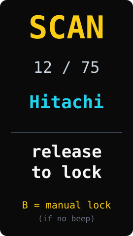
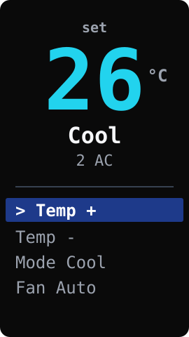

OmniRemote Web Installer
One M5Stack StickS3 controls every AC in your home. Flash OmniRemote firmware to your StickS3 directly from the browser — no PlatformIO, no Python, no esptool. After flashing it works offline forever: no WiFi, no account, no app.

A = front big button (rectangular, below the LCD with the blue accent) · B = small button on the right side, near the top


After flashing, unplug USB — the stick boots on its internal battery. If the screen stays dark, double-press the side button.
Re-flashing keeps your paired ACs by default: after you click Install, the browser shows an "Erase device" checkbox with Back / Next buttons. Leave it unchecked and hit Next — only the firmware partitions (bootloader / partitions / app) get rewritten; the NVS region is untouched, so every saved AC profile survives. Tick Erase only when you want a clean slate.
Speed up SCAN — only test your brands
By default SCAN walks all 83 built-in AC protocols (~80 s end to end). After flashing, open the configure page to tick only the brands you actually own at home. The stick will then sweep only those — usually a few seconds. Web Serial writes the bitmap straight to NVS, fully offline.
Troubleshooting
- No port listed: try another USB-C cable (many are charge-only), and confirm desktop Chrome / Edge.
- SCAN cycled 90 s without a hit: your AC may not be in the 75 built-in variants. Press
B shortwhile still holding A to lock the current code; or open a GitHub issue with your AC's brand & model. - AC reacted but the screen didn't auto-FOUND: move closer (< 1 m); or tap
B shortto lock manually. - CLI fallback: on a machine with PlatformIO,
pio run -t upload -e m5sticks3-ac.
Hardware reference: M5Stack StickS3 docs. Built on IRremoteESP8266 and esp-web-tools. MIT-licensed source: github.com/openbrt/omniremote